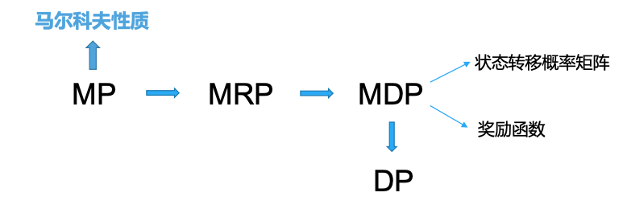
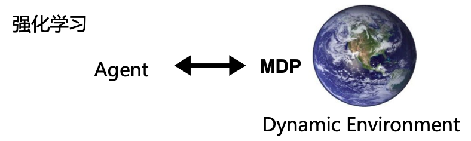
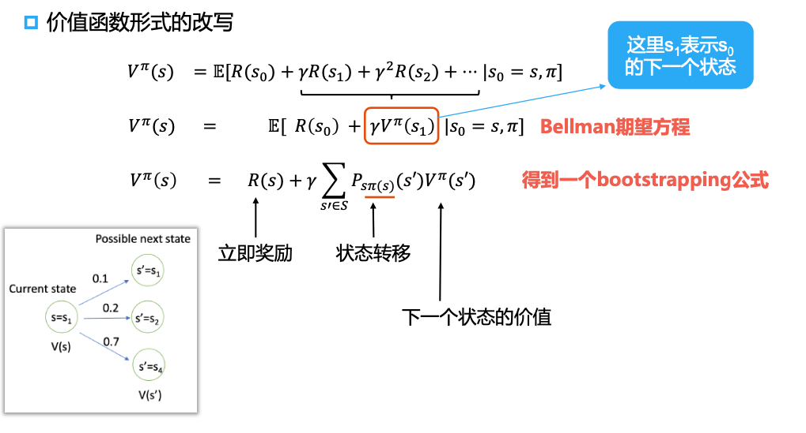
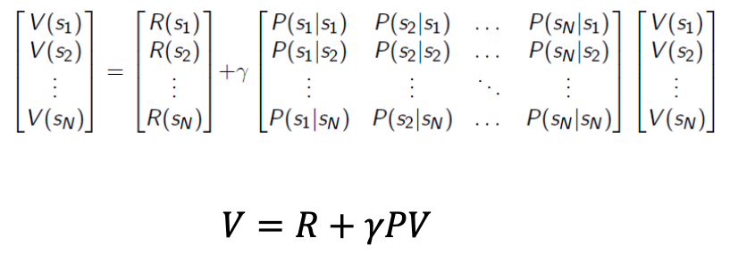

第三章 马尔可夫决策过程
第三章 马尔可夫决策过程
文章逻辑: 1. 引入状态、 多步决策和决策过程 2. 阐述马尔可夫性质 3. 引入马尔可夫奖励过程 4. 扩展到马尔可夫决策过程 5. 引入占用度量和策略 6. 推出
Bellman方程

在第二章 多臂老虎机与探索问题中, 我们基于多臂老虎机介绍了机器学习中探索和利用的平衡问题.
现在我们尝试在多臂老虎机问题的基础上引入更复杂的情况.
问题从简单到复杂
- 无状态决策 vs 有状态决策
- 单步决策 vs 多步决策
- 奖励过程 vs 决策过程
从无状态决策到有状态决策
- 从无状态决策到有状态决策 多臂老虎机 -> 上下文多臂老虎机
- 从单步到多步决策
- 单步决策问题: 一次决策不会影响到后续状态
- 多步决策问题: 一步决策会影响到后续会面对的状态
- 从奖励过程到决策过程
- 无需干涉, 任由环境自发经历一系列状态转移, 在每个状态下对应着相应的奖励
- 在每个状态下需要经过决策给出动作, 进而影响环境产生下一个状态, 在每个状态下对应着相应的奖励
解决决策问题的关键环境
- 对环境建模——如何用数学语言来描述环境
- 对问题建模——如何用数学语言来描述问题目标
- 提求解算法——通过跟环境交互找到一个好策略
- 对算法分析——分析算法的收敛性、唯一性等
马尔可夫过程
马尔可夫奖励过程中, 没有动作, 并且引入了如下概念:
- 有了状态的概念
- 有了多步的概念
- 其他新概念:
- 回合
- 回报
- 折扣因子
概率轮与随机过程
- 概率论是对随机现象进行建模的数学分支(静态随机现象)
- 随机过程是一个或多个事件、随机系统或者随机现象随时间发生演变的过程(动态随机现象)
\[ \mathbb{P}[S_{t+1}|S_1,\dots,S_t] \]
马尔可夫过程
马尔可夫过程是具有马尔可夫性质的随机过程
The future is independent of the past given the present
定义:
- 状态\(S_t\)是马尔可夫的, 当且仅当:
\[ \mathbb{P}[S_{t+1}|S_t] = \mathbb{P}[S_{t+1}|S_1,\dots,S_t] \]
性质:
- 状态从历史中捕获了所有相关信息
- 当前状态已知的时候, 历史和未来是独立的
- 也就是说, 当前状态是未来的充分统计量
马尔可夫奖励过程
一个马尔可夫奖励过程是一个伴随着奖励的马尔可夫链. 比如:
这里可以看到, 状态都是概率转移的, 没有动作这个部分.
定义:
- MRP可以由一个四元组表示:\((S, \{ P_{ss'} \}, \gamma, R)\)
- \(S\)是状态的集合
- 比如迷宫中的位置
- \(\{ P_{ss'}
\}\)是状态转移概率(矩阵)
- 对每个状态\(s\in S\), \(P_{ss'}\)是从\(s\)转移到下一个状态\(s'\)的概率
- \(R:S \longmapsto \mathbb{R}\)是奖励函数
- \(\gamma \in [0,1]\)是对未来奖励的折扣因子
回合(episode)
回合是指在强化学习设置中, 智能体与环境的一次完整的交互. (比如完成游戏或者被boss杀掉)
对长期总体效果的评估——回报
回报(Return): 是对未来时间采样得到的所有经过折扣因子的奖励的累和
\[ G_t = R_{t+1} + \gamma R_{t+2} + \gamma^2 R_{t+3} + \cdots \\\\ = \sum\limits_{k=0}^{\infty} \gamma^k R_{t+k+1} \]
引入折扣因子的原因:
- 如果是经济方面的奖励, 相比延迟奖励人们往往对及时奖励更感兴趣
- 动物和人类的行为都表现出对及时奖励的偏好
- 未来代表着存在一定的不确定性
- 对于循环马尔可夫过程, 我们希望避免无穷大回报值
- 如果所有轨迹序列都确保有终止，并且不希望区分当前和未来的奖励时，可以让折扣因子等于1.
价值函数
价值函数: 给出状态\(s\)的长期价值
定义: 马尔可夫奖励过程的状态价值函数是从状态\(s\)预期到的回报
\[ v(s) = E[G_t|s_t = s] \\\\ = E[R_{t+1} + \gamma R_{t+2} + \gamma^2 R_{t+3} + \cdots | s_t = s] \]
这里强调一下, 这个回报是预期回报. 如何得到预期回报, 就要涉及到具体的强化学习方法了.
马尔可夫决策过程
马尔可夫决策过程(Markov Decision Process, MDP): 一套结果部分随机、 部分在决策者的控制下的为决策过程建模的数学框架.
\[ \mathbb{P} [S_{t+1}|S_t] = \mathbb{P}[S_{t+1}|S_1,\dots,S_t] \\\\ \Rightarrow \mathbb{P}[S_{t+1}|S_t, A_t] \]
马尔可夫决策过程形式化地描述了一种强化学习的环境:
- 环境完全可预测
- 当前状态可以完全表征过程
定义: 马尔可夫决策过程(MDP)可以由一个五元组表示\((S,A,\{ P_{sa} \}, \gamma, R)\)
- \(S\)是状态的集合
- 比如迷宫中的位置
- \(A\)是动作的集合
- \(P_{sa}\)是状态转移概率
- 对每个状态\(s\in S\)和动作\(a\in A\), \(P_{sa}\)是下一个状态的概率分布
- \(\gamma \in [0,1]\)是对未来奖励的折扣因子
- \(R:S \times A \longmapsto
\mathbb{R}\)是奖励函数
- 有时奖励只和状态有关
MDP的动态性
大部分强化学习, 奖励只和状态相关, 此时奖励函数为\(R(s):S\longmapsto \mathbb{R}\)
MDP下的动作与策略
- MDP在MRP的基础上引入了动作\(a\)
- 动作\(a\)是智能体的policy策略函数\(\pi\)的输出, \(a = \pi (s)\)
- Policy可以基于动作价值函数\(q(s,a)\)进行构建, 即在状态\(s\)下贪心选择\(q\)值最大的动作
- 不同于价值函数 \(v(s)\) 仅表示状态 \(s\) 的价值，\(q(s, a)\) 表示在状态 \(s\)下采取动作 \(a\) 的价值
与MDP动态环境交互
从固定的数据集学习和从与MDP交互中学习有什么区别?

为什么要考虑与环境交互产生的数据分布问题?
- 与环境交互数据分布表达了智能体经验的丰富程度，某种程度上决定了智能体的能力范围
- 数据分布与当前强化学习的一个热点研究方向——离线强化学习，密切相关
占用度量和策略
- 给定同一个动态环境(即MDP), 有一个初始状态分布\(v_0(s)\)
- \(P^{\pi}_t(s)\)表示采取策略\(\pi\)使得智能体在\(t\)时刻处于状态\(s\)的概率, 于是有: \(P^{\pi}_0(s) = v_0(s)\)
在以上基础上, 我们可以定义一个策略的状态访问分布:
\[ v^{\pi}(s) = (1-\gamma)\sum\limits_{t=0}^T \gamma^t P^{\pi}_t(s) \]
可近似看作: 随机从轨迹中抽出一个交互来, 这个交互处于状态\(s\)的概率
占用度量(Occupancy Measure): 在给定策略下对与状态动作对的访问分布
\[ \rho^{\pi}(s,a) = (1-\gamma)\sum\limits_{t=0}^T \gamma^t P^{\pi}_t(s)\pi(a|s) = v^{\pi}(s)\pi(a|s) \]
- 定理1: 和同一个动态环境交互的两个策略\(\pi_1\)和\(\pi_2\)得到的占用度量\(\rho^{\pi_1}\)和\(\rho^{\pi_2}\)满足: $^{_1}=^{_2} iff _1 = _2 $
- 给定占用度量\(\rho\),可生成该占用度量的唯一策略是:\(\pi_{\rho} = \frac{\rho(s,a)}{\sum_{a'}\rho(s,a')}\)
强化学习的目标与贝尔曼等式
强化学习的目标: 找到能够最大化累计奖励期望的策略, 即:
\[ \mathop{max}\limits_{\pi}\mathbb{E}[R(s_0) + \gamma R(s_1) + \gamma^2 R(s_2) + \dots] \]
给定策略\(\pi\)定义价值函数:
\[ V^{\pi}(s) = \mathbb{E}[R(s_0) + \gamma R(s_1) + \gamma^2 R(s_2) + \dots | s_0 = s, \pi] \]
即在给定状态\(s\), 根据策略\(\pi\)采取动作时的累计奖励期望
价值函数的Bellman等式
第一种Bellman等式(贝尔曼方程):

第二种Bellman等式(贝尔曼状态动作价值方程):
\[ Q^{\pi}(s,a) = R(s,a) + \gamma \sum\limits_{s' \in S} P_{sa}(s') \sum\limits_{a'\in A}\pi(a'|s')Q^{\pi}(s',a') \]
在动作导致的状态变换是遵循一定概率的情况下, 使用上述
Bellman等式
最优价值函数
对于状态\(s\)来说的最优价值函数是所有策略可获得的最大价值
\[ V^*(s) = \mathop{\max}\limits_{\pi} V^{\pi} (s) \]
最优价值函数的Bellman等式:
\[ V^*(s) = R(s) + \mathop{\max}\limits_{a\in A}\gamma\sum\limits_{s' \in S}P_{sa}(s')V^*(s') \]
对状态\(s\)和策略\(\pi\)有:
\[ V^*(s) = V^{\pi^*}(s) \ge V^{\pi}(s) \]
此时我们可以将Bellman等式改写为矩阵形式:

对于MDP, 把\(P(s_1|s_1)\)改为\(P(s_2|s_1, a)\)后公式一样成立
显然Bellman等式是一个线性等式, 所以可以直接求解:
\[ \begin{align} V & = R + \gamma PV \\\\ (1-\gamma P)V & = R \\\\ V & = (1-\gamma P)^{-1}R \end{align} \]
求解的时间复杂度为\(O(N^3)\), 因此此方法只适用于小规模的MRP
对于大概膜的MRP可考虑如下方案: - Dynamic Programming - Monte-Carlo evaluation - Temporal-Difference learning